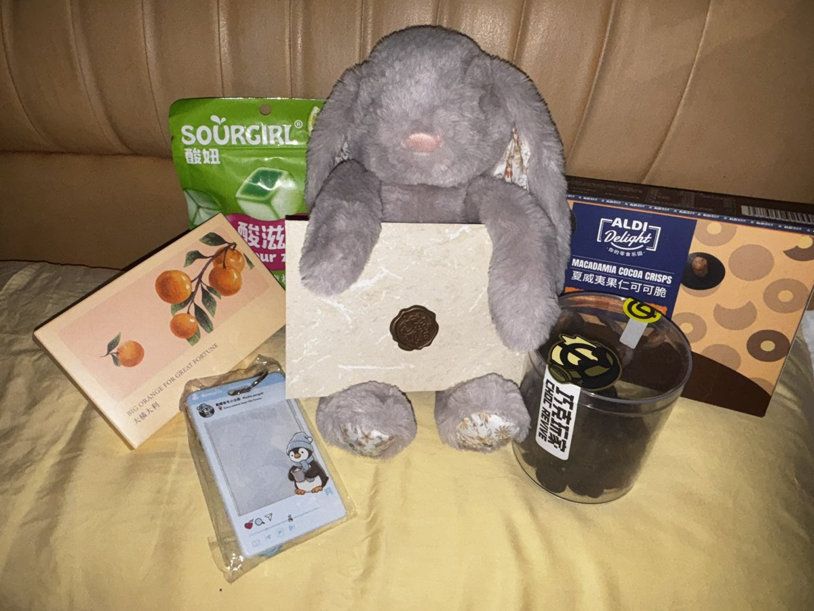
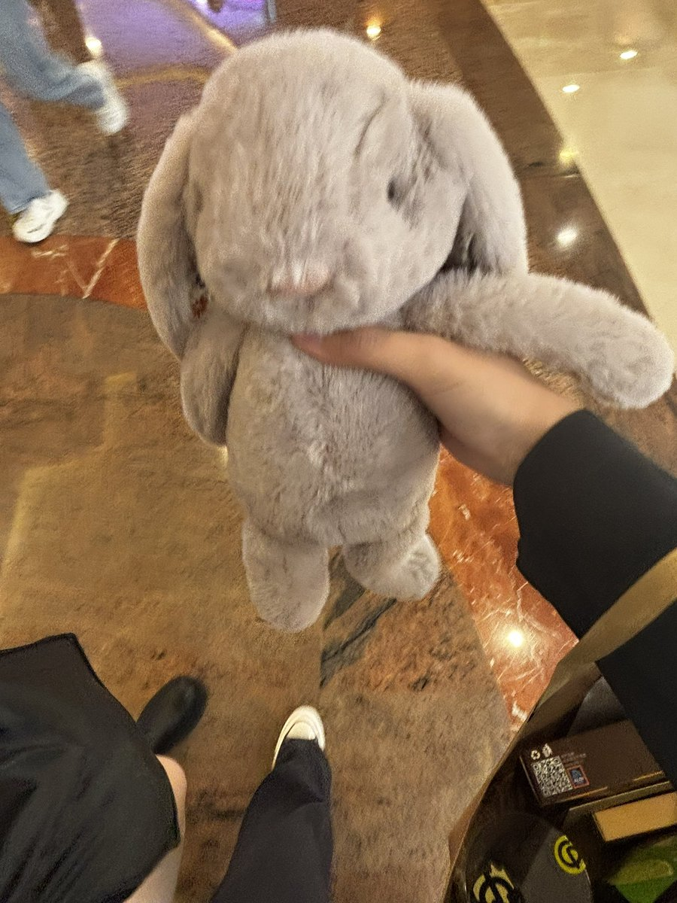
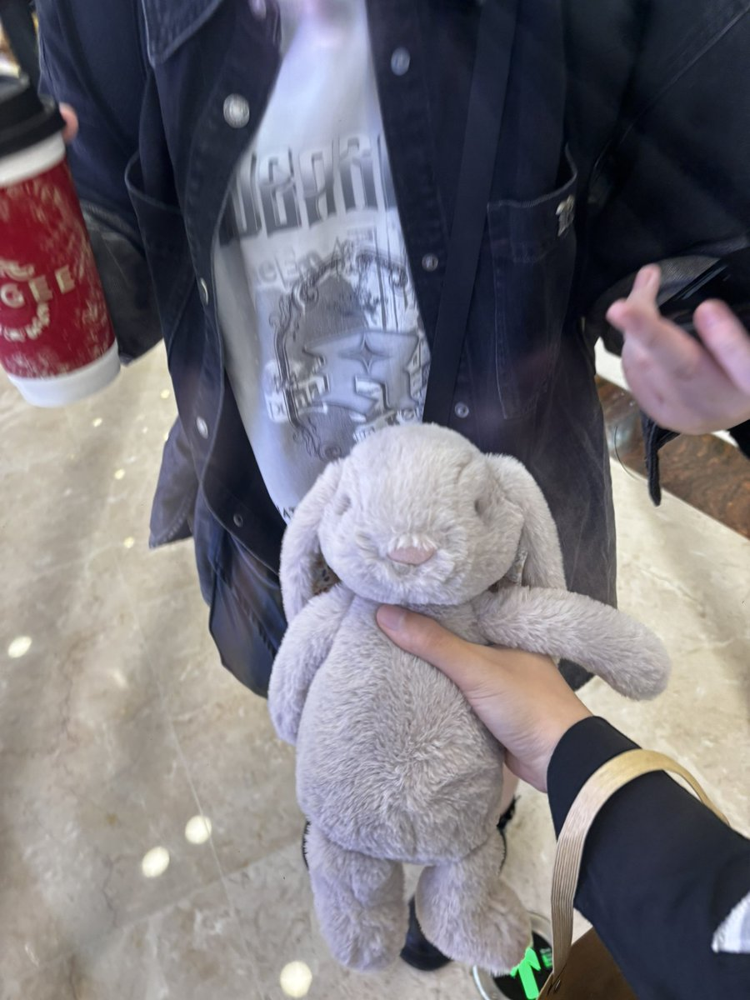

R·G_X3💤
@L0OKMe3
她送我很多精心挑断的贵重礼物 娃娃、信、各种零食 在外滩附近特意为我挑选的手工巧克力（之前和她逛南京东路的时候去试吃 我说了一句好吃 她就一直记在心里为我准备礼物）这些礼物我都很舍不得拆开
她甚至约定以后每年 每个节日都会有独属于我的节日礼物。。
这么对比下来我为她买的八音盒好没心意



R·G_X3💤
@L0OKMe3
我的宝藏在她生日的时候给我准备了一大包礼物 其中还有一个布娃娃 我真的非常喜欢🥹
说真的 我给她准备的生日礼物我都多少有些不好意思拿出来了。。 https://t.co/hLSXYkvJzM